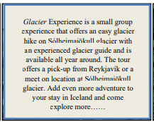

Glacier Experience is a small group experience that offers an easy glacier hike on Sólheimajökull glacier with an experienced glacier guide and is available all year around. The tour offers a pick-up from Reykjavík or a meet on location at Sólheimajökull glacier. Add even more adventure to your stay in Iceland and come explore this amazing crawling glacier with us.
Sólheimajökull glacier is an outlet from the might Myrdalsjokull and is surrounded by some of Iceland's most grand volcanoes and during summertime, a glacier lagoon forms in front the glacier only adding to the charm of the location. This popular day tour is the perfect way to get in real contact with the true reason behindkthe name Ice-land!